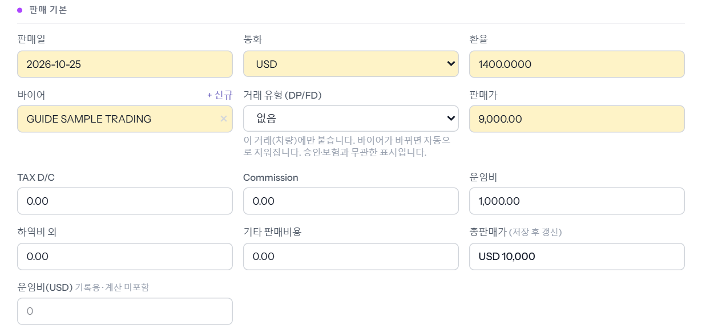
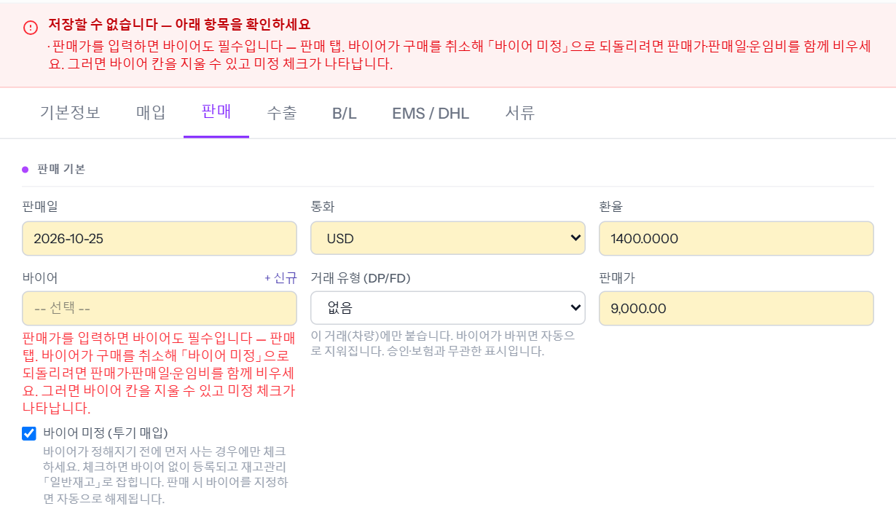
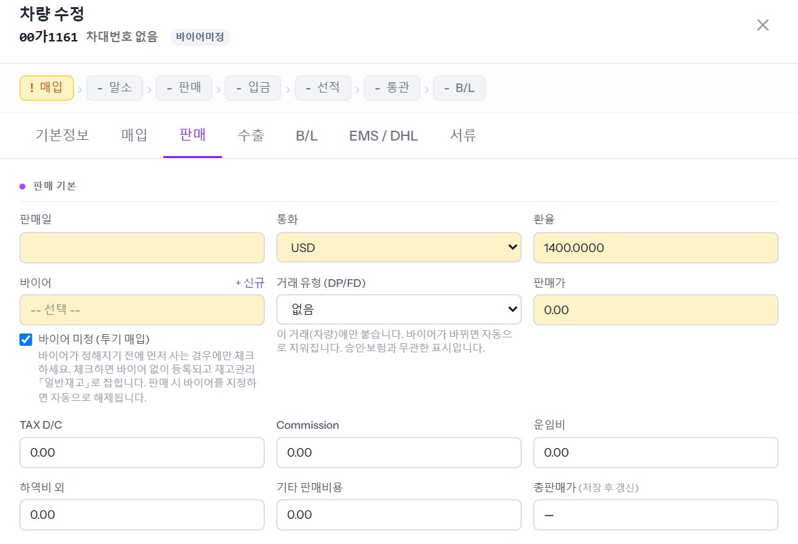

바이어가 차를 사지 않기로 해서 판매를 무르고 다시 「바이어 미정」(재고로 들고 있는 차)으로 돌리는 방법입니다. 바이어 칸만 지워서는 저장되지 않습니다 — 판매가 · 판매일 · 운임비를 같이 비워야 합니다. 예시 차량 00가1161(USD 판매가 9,000 + 운임비 1,000).

바이어 칸의 ×로 바이어를 지우면 아래에 「바이어 미정 (투기 매입)」 체크가 나타납니다. 그런데 판매가가 남은 채로 체크하고 저장하면 저장되지 않고 이유가 뜹니다.

판매일 · 판매가 · 운임비를 지우고, 바이어 칸이 빈 상태에서 「바이어 미정 (투기 매입)」을 체크한 뒤 저장합니다. 저장되면 차 이름 옆에 「바이어미정」이 붙고, 진행 줄의 「판매」 체크가 빠지며 진행상태가 매입 단계로 돌아갑니다. 매입 대금을 다 치른 차라면 재고관리에서 「일반재고」로 잡힙니다.
